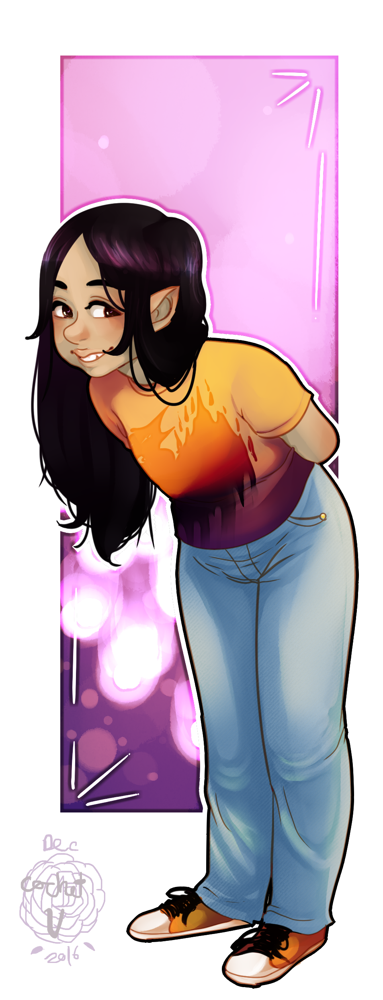

Jack o’Lantern Girl
Jack o’Lantern Girl Magical Bears in the Context of Contemporary Political Theory
Magical Bears in the Context of Contemporary Political Theory An Unclean Legacy
An Unclean Legacy Stomping the World Round
Stomping the World Round The Storm That Saw Itself
The Storm That Saw Itself Vidar's Boot
Vidar's Boot Invasion
Invasion Primal Chaos
Primal ChaosJane
{kind=link}
Jane usually shows up in legends as a young girl with Martin as her brother. Since she currently is a young girl and Martin is currently her brother, she doesn’t have to master the finer points of acting.
Jenna was one of the people of salt. To evade the monster, she died, revived herself, and hid in the tunnels. At some point, the monster found her. He renamed her Jane. Unhappy, she fled to the firewood world and tried to make her life there. It didn’t work, and sometime between then and now, Martin found her and remade her. He kept the name Jane.
Episodes with Jane/Jenna:
| Scrape. Scrape. Crunch. | Legend |
|---|---|
| What is Hitherby Dragons? | Merin |
| Classifying Things | Legend |
| Alan | History (Early 1980) |
| She Puts on Shows | Merin |
| The Truth | Legend |
| Scanning Things | Legend |